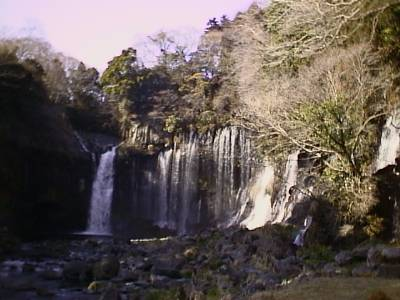
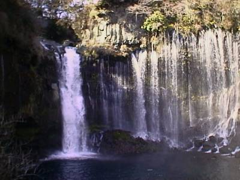
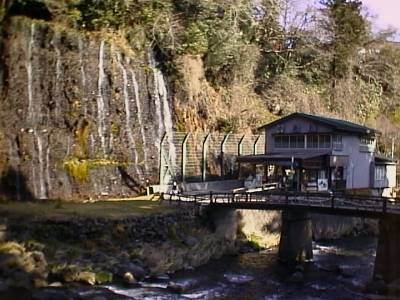
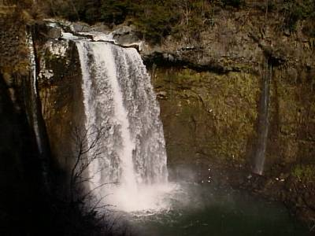
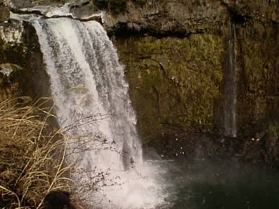
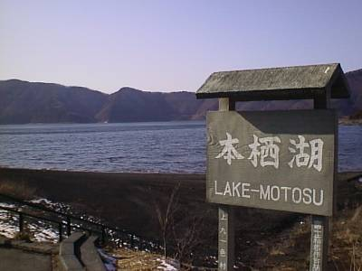
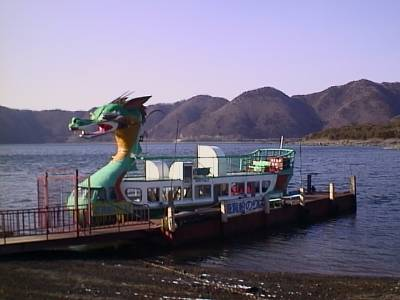
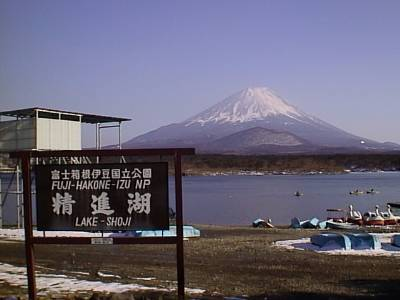
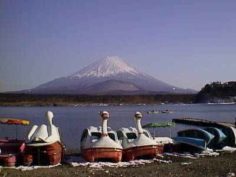
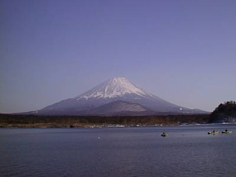

my treasure box
－1999/2/25－
今日の旅は、旅とは言えませんね。単なる帰省です。
現在住んでいるところは静岡県清水市。そして出身地は長野県長野市。
ということで、清水市から長野市まで私の愛車「ミラ号」をとばしてまいりました。
| ○静岡県清水市 発 |
| ＝＞ １号線バイパス －＞ 国道１３９号線 －＞ 国道３５８号線 －＞ 中央道 －＞ 長野道 ＝＞ |
| ○長野県長野市 着 |
今まではよく、国道５２号線から中央道の韮崎インターに入っていたのですが、ちょっと観光をかねて富士山の真横を通り甲府南インターから中央道に入りました。その途中で白糸・音止の滝、本栖湖、精進湖を見てきました。詳細は以下。
～白糸の滝～

白糸の滝です。平日だったので開いている店も少なく静かでした。しかし、来ている客はカップルばかりで、平日に一人で来た私はかなり異質な存在だったことでしょう。

これが滝のアップです。非常にきれいな水であることもさることながら、滝のしぶきで至る所に虹を見ることができ、非常にきれいだなあという印象でした。

これが滝の反対側になります。かなり広い範囲で滝ができているのがわかります。橋が架かっていますが、この橋がこの滝と相まってよりいっそうの風情をかもし出しています。
～音止の滝～

これは白糸の滝のすぐ近くにある音止の滝です。約50メートルの高さから流れ落ちる様は圧巻です。

近くで見た図。やはりこのような滝は秋の紅葉のシーズンに見たいものです。
～本栖湖～

これは富士五湖の内の一つ本栖湖です。やはり平日だったので、人は誰もいませんでした。寂しい・・・。

遊覧船てす。本栖湖には竜が住んでいたという伝説があったので、そういう意味では間違いではないのですが・・・。人がいない分、寂しさ倍増。
～精進湖～

ここは、同様に富士五湖の一つ、精進湖です。この日は天気も良く、非常にきれいな富士山を拝めました。

富士山、精進湖、そしてアヒル・・・いや、白鳥・・・。

富士山の図。まさに絵はがきになっていそうな写真です。この写真を見ると、改めて「観光しているんだなあ」という気分になります。
今日の写真は以上です。長野市近辺の写真は、別のページにも載っていますので、それを参照のこと。